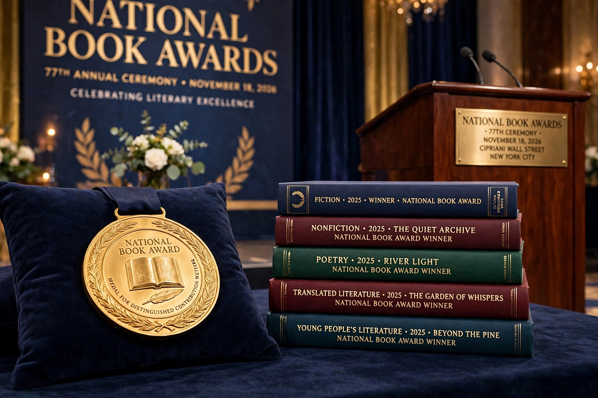

The National Book Awards are a set of annual US literary awards administered by the National Book Foundation, founded in 1950.

National Book AwardPre-war booksellers' awards (1936–1942) preceded the modern awards, whose first winners included Nelson Algren. Categories evolved; Translated Literature was added in 2018 (reviving a 1967–83 category).
Fiction winners include William Faulkner (twice), Ralph Ellison (Invisible Man), Colson Whitehead, Jesmyn Ward (twice) and Justin Torres; nonfiction winners include Ta-Nehisi Coates and Ibram X. Kendi. Judges are writers; winners receive $10,000 and a bronze medal. See National Book Foundation.